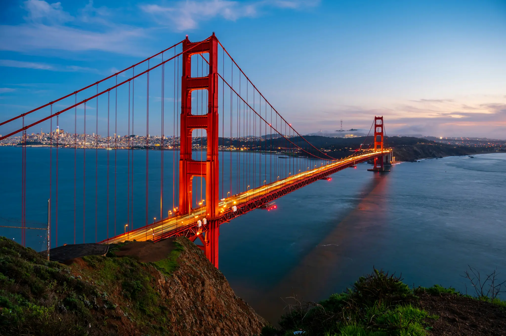

Inženjerstvo mostova predstavlja jednu od najfascinantnijih grana građevinarstva koja spaja estetiku, fiziku i vrhunsku matematiku. Od drevnih kamenih lukova koje su gradili Rimljani pa sve do modernih visećih čeličnih konstrukcija, mostovi su oduvijek bili ključni simboli ljudskog napretka, povezivanja ljudi i savladavanja nepristupačnih prepreka poput rijeka, klisura i mora.
Na ovom sajtu imaćete priliku da se detaljnije upoznate sa osnovnim vrstama mostova, ključnim inženjerskim izazovima sa kojima se graditelji suočavaju, kao i da istražite galeriju nekih od najimpresivnijih građevinskih poduhvata na svijetu. Kroz pažljivo odabrane sadržaje otkrijte kako su ljudska vizija i inovacije oblikovale pejzaže širom planete.

Saznajte više o istoriji gradnje na sajtu: Istorijski pregled graditeljstva (History.com)